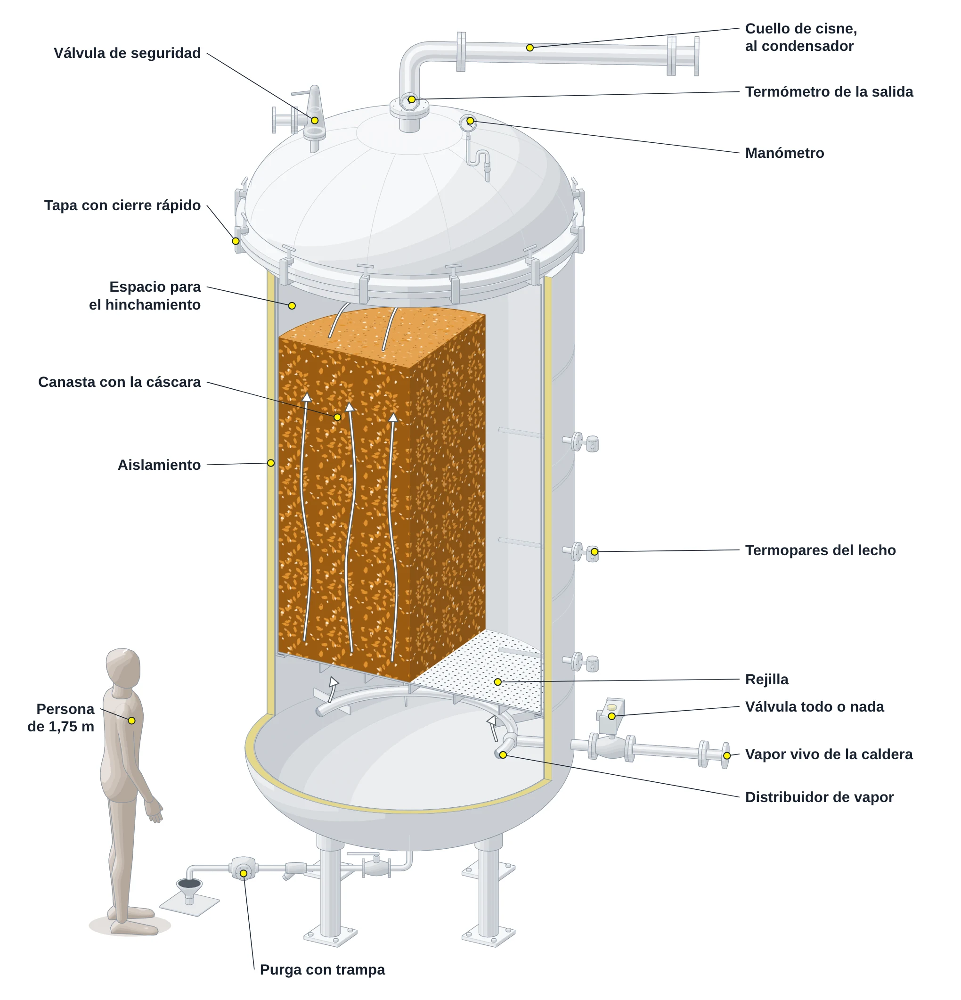

Proyecto de Operaciones Unitarias · Sesión 07
Arrastre de vapor
Por qué el aceite de la cáscara sale con el vapor a menos de 100 °C, por qué sale tan despacio y cómo se diseña el extractor que lo saca.
El área 200 de la planta
La planta del libro destila en Bogotá, a 73,7 kPa, la cáscara entera de una juguera, con 8,47 g de aceite por kilogramo. La caldera manda 1600 kg/h de vapor saturado de 5 bara a una batería de cuatro extractores.
- Llegan 3801 kg/h de cáscara, desgarrada en trozos de 5 a 10 mm, en cargas de 2545 kg por extractor.
- A la batería entran 1594 kg/h de vapor: 1102 salen con el aceite hacia el condensador, 486 se condensan calentando la cáscara y 6 en las paredes.
- Salen 21,0 kg/h de aceite, que pasan a la winterización y después a la rectificación al vacío.
Dos líquidos que hierven juntos
Las tres maneras de poner el vapor en contacto con el material, el Clevenger del laboratorio y el equilibrio entre el agua y un aceite inmiscible.
Las tres formas del arrastre
El aparato de Clevenger

Es la versión de laboratorio del arrastre: hidrodestila una muestra pesada, y el aceite, más liviano que el agua, flota en el tubo graduado y se lee en mililitros.
El agua vuelve al matraz con el aceite que lleva disuelto, que se recupera en la pasada siguiente: eso es la cohobación.
Destilado hasta que la lectura deja de cambiar, da el aceite total del material, la referencia contra la que se mide un extractor. En la práctica, con una hora de curva, da la forma de la curva y cómo responde al tamaño de la cáscara.
El equilibrio de dos líquidos inmiscibles
Cada líquido pone su presión de vapor entera, como si el otro no estuviera, y la mezcla hierve donde la suma llega a la presión:
Según la regla de las fases, dos líquidos y un vapor dejan un solo grado de libertad. Fijada la presión, quedan fijas la temperatura de ebullición y la composición del vapor, y no se mueven mientras haya algo de cada líquido.
El limoneno solo hierve a 163,1 °C en Bogotá; con agua, a 88,88 °C.
La relación de equilibrio
El vapor lleva los moles de cada líquido en la razón de sus presiones de vapor. Con las masas molares, la masa de aceite por kilogramo de agua es
En Bogotá, = 0,724 kg/kg; a nivel del mar, 0,736. Para el limoneno da casi lo mismo destilar en Bogotá o en la costa: sus dos presiones de vapor crecen casi en la misma proporción.
Es el máximo, lo que llevaría el vapor si encontrara el aceite libre.
Un aceite de varios componentes
Los componentes del aceite sí se mezclan entre ellos, así que cada uno aporta su fracción molar por su presión de vapor (la ley de Raoult). El agua, inmiscible, sigue aportando la suya completa:
En el ejemplo 32.1, un aceite que en masa es 94 % limoneno, 4 % linalol y 2 % citral hierve con el agua a 88,98 °C. Cada kilogramo de agua del vapor arrastra 0,696 kg de aceite.
| Componente | En el aceite | En el vapor |
|---|---|---|
| Limoneno | 94 % | 98,6 % |
| Linalol | 4 % | 1,2 % |
| Citral | 2 % | 0,22 % |
Linalol y citral, los oxigenados que dan el olor, tienen menos presión de vapor y salen más despacio. Por eso lo que va quedando en la carga es cada vez más rico en ellos, y es lo que pierde un lote que se corta pronto.
La hidrodifusión
Por qué el vapor que sale de un extractor lleva tan poco aceite, y por qué más vapor no lo arregla.
La salida del aceite
La brecha con el equilibrio
El aceite necesita horas para salir del tejido, y el vapor cruza el lecho en segundos. Subir el caudal ayuda en el calentamiento y un poco en el lavado; en la difusión, que es la etapa lenta, el aceite sale al mismo ritmo y cada kilogramo de vapor lleva menos. A eso se suma que 486 de los 1594 kg/h que entran, el 30 %, se condensan en la cáscara fría sin llevar aceite.
El rendimiento contra el tiempo
El ensayo, el modelo que se le ajusta y el momento de cortar el lote.
Dos modelos de rendimiento
Las propiedades del aceite no dicen cuánto tarda en salir: eso lo ponen la cáscara, el tamaño de los trozos y la forma de cargar. Por eso el diseño parte de medir el aceite recogido a lo largo del tiempo y ajustarle un modelo.
Primer orden con tiempo muerto
Durante los primeros minutos el vapor se condensa en la carga y no sale aceite. En los arrastres con vapor que se han comparado, este modelo describió los datos mejor que el de dos etapas.
Dos etapas, lavado y difusión
La fracción es el aceite expuesto, que se lava rápido; es el que tiene que difundirse. Sirve cuando la curva arranca con un salto, como suele pasar en el Clevenger del Laboratorio 1.
El ajuste de un ensayo
Ocho puntos de hojas de tomillo molidas a 1,2 mm, hidrodestiladas por Sovová y Aleksovski, ajustados por mínimos cuadrados:
- Primer orden: = 9,62 g/kg y = 0,0257 min⁻¹, y 1,95 % de desviación relativa media.
- Dos etapas: = 9,76 g/kg, = 0,122, = 0,074 y = 0,0222 min⁻¹, con 1,47 %.
Con dos parámetros más, el modelo de dos etapas baja la desviación apenas medio punto. Para escoger, mire los residuos: si se ordenan en una tendencia, el modelo falla aunque la curva pase cerca de los puntos.
El corte del lote
Cada ciclo suma la destilación y los 30 min de descarga y carga. El aceite por minuto de ciclo es la pendiente de la recta que sale de hasta la curva, y es máxima donde la toca:
En el caso, a los 130,7 min: 65,1 % del aceite y 14,0 kg por carga. El corte deja aceite en la cáscara a propósito.
Los criterios de corte
- Máxima producción por ciclo, si la capacidad de los extractores es la restricción: 130,7 min y 5,2 kg/h por extractor.
- Recuperación mínima, cuando lo escaso es la cáscara: con 90 %, = 238 min, y el extractor baja a 4,3 kg/h.
- Relación marginal mínima, cuando manda el costo del vapor: al corte del caso, cada kilogramo de vapor lleva 10,7 g de aceite, contra 30,6 en la primera gota.
La regla de los destiladores, cortar con una parte de aceite por cuarenta de agua, cortaría a los 72 min con 31 %: sirve para materiales rápidos, y la cáscara de cítricos es de los más lentos.
El extractor y la batería
Las piezas, el escalado, el tiempo muerto, la velocidad del vapor y los cuatro extractores desfasados.
El extractor por dentro

- La canasta sale completa con la cáscara agotada, colgada de un polipasto; se llena dejando un hueco arriba, porque la carga crece cerca de un tercio con el vapor.
- Bajo la rejilla, el distribuidor reparte el vapor antes de que entre al lecho. Un vapor mal repartido abre canales desde el primer minuto.
- La purga con trampa desaloja el condensado del fondo; si se acumula, la cáscara de abajo queda en agua y el equipo pasa a hidrodestilar.
- El cuello de cisne baja con pendiente al condensador, para que lo que condensa en él no vuelva al lecho.
- Con los termopares del lecho se sigue el avance del frente caliente y se ven los canales.
Del piloto a la planta
Las condiciones del ensayo
Se mantienen del ensayo la altura de cáscara, los kilogramos por metro cúbico, el tamaño de los trozos y el caudal de vapor por kilogramo de carga. Con eso, cualquier columna del extractor grande se comporta como el piloto, y su curva sirve sin corregirla.
El área
Para procesar más cáscara se agranda el diámetro o se ponen más extractores. Subir la altura aprovecharía mejor el vapor, pero alarga el calentamiento, comprime los trozos del fondo y obliga a repetir el ensayo.
El reparto del vapor
Un distribuidor que reparte bien en un recipiente pequeño puede dejar zonas frías en uno de 1,8 m. Por eso el extractor de la planta lleva termopares en el lecho.
El tiempo muerto
El vapor que se queda calentando la carga y el acero sale del balance de energía:
y el tiempo muerto, del vapor que entra menos el que condensan las paredes:
En el caso, 769 200 kJ para llevar 2545 kg de cáscara y 3000 kg de acero de 20 a 91,23 °C: 325 kg de vapor y 40,0 min antes de la primera gota.
El lecho trabaja a 91,23 °C y no a los 88,88 del equilibrio: el vapor que sale lleva tan poco aceite que el agua pone casi toda la presión.
La velocidad del vapor y la caída del lecho
0,121 m/s
Es la que tendría el vapor con el lecho vacío, : 490,0 kg/h con la densidad del vapor a 91,23 °C, 0,443 kg/m³, en los 2,545 m² del extractor.
27 Pa en 2,0 m
Sale de la ecuación de Ergun con trozos de 7,5 mm y porosidad de 0,50. Es poco: en el extractor pierden más presión el distribuidor, la rejilla, el condensador y el cuello de cisne.
Los dos límites
Con exceso de vapor salen gotas hacia el condensador y el lecho se abre en canales; con muy poco, el vapor se queda condensado abajo y el fondo se llena de agua. Si la caída de presión sube a lo largo del lote, la carga se está compactando.
La batería de cuatro extractores
Con un solo extractor, la caldera y el condensador trabajarían a ratos. Si se escalonan cuatro, cada uno un cuarto de ciclo después del anterior, tres o cuatro están siempre recibiendo vapor:
El caudal de cada extractor fija su tiempo muerto, y el tiempo muerto cambia el tiempo de vapor, así que se itera hasta que los dos cuadran. El caso da 3801 kg/h de cáscara y 21,0 kg/h de aceite, y por cada kilogramo de aceite la caldera entrega 76,3 kg de vapor.
El P&ID de un extractor
- XV-203A, la válvula todo o nada que el programa de la batería abre al empezar el lote y cierra al cortar.
- PI-204A, la presión en la tapa, y PSV-207A, la válvula de seguridad que protege ese recipiente cerrado lleno de vapor.
- TI-205A, la temperatura a la salida.
- TE-206A, los tres termopares del lecho, que llegan al sistema de control.
- La purga del fondo, con su trampa.
El balance del área 200
| Corriente | Agua (kg/h) | Aceite (kg/h) |
|---|---|---|
| Vapor de la caldera | 1600 | |
| Condensa en la línea | 6,1 | |
| Calienta las cargas | 485,6 | |
| Condensa en las paredes | 6,1 | |
| Vapor con aceite a E-201 | 1102,2 | 21,0 |
| Reposición de la caldera | 497,8 |
El hidrolato, el agua que sale del florentino, vuelve a la caldera como agua de alimentación: está destilada, y el aceite que lleva disuelto vuelve con el vapor.
En los capítulos anteriores, el condensador y el florentino se dimensionaron para los 1600 kg/h que da la caldera, con 13 g de aceite por kilogramo de vapor. En realidad llegan al condensador 1102 kg/h con 19 g/kg, porque el resto del vapor se condensó en las cargas.
Causas de un rendimiento bajo
El extractor de su planta
Con qué datos lo diseña su equipo y qué tiene que justificar.
Lo que pide su extractor
Lo que sigue
Retroalimentación 1
La sustentación de la Bitácora 1 por equipos.
Laboratorio 1
El Clevenger con cáscara de naranja de dos tamaños. El prelaboratorio abre el viernes anterior.
Memorando del Laboratorio 1
Lo que el diseño de la planta toma del laboratorio y lo que no.
Bitácora 3
El arrastre, el condensador, el florentino, la winterización y los servicios.
El capítulo 32 del libro trae, además de esta clase, recuadros para mover el equilibrio, el lote de un extractor y la batería, y retos con números que cambian.
IQYA-2031 · Sesión 07
Próxima sesión
Nos vemos el jueves 18 de febrero en la Retroalimentación 1, con la sustentación de la Bitácora 1 de cada equipo.
Figuras: capítulo 32 del libro de operaciones unitarias del curso y esquema del Clevenger del laboratorio. Grabados, vía Wikimedia Commons: «Citrus, Citronier» y «Citrus aurantium», New York Public Library, dominio público; «Un boticario y un alambique primitivo» y «Rama de cítrico con dos frutos», Wellcome Collection, CC BY 4.0; «Citrus madurensis», Francisco Manuel Blanco, dominio público.